地政学
ポートオブスペインは南米大陸に近いカリブ海の首都で、ベネズエラ、島嶼国家、英語圏カリブ、エネルギー市場を結びます。港、外交、移民、海上保安、災害対応が集中し、小国の交渉力を支える中枢です。海域の管理も要点です。
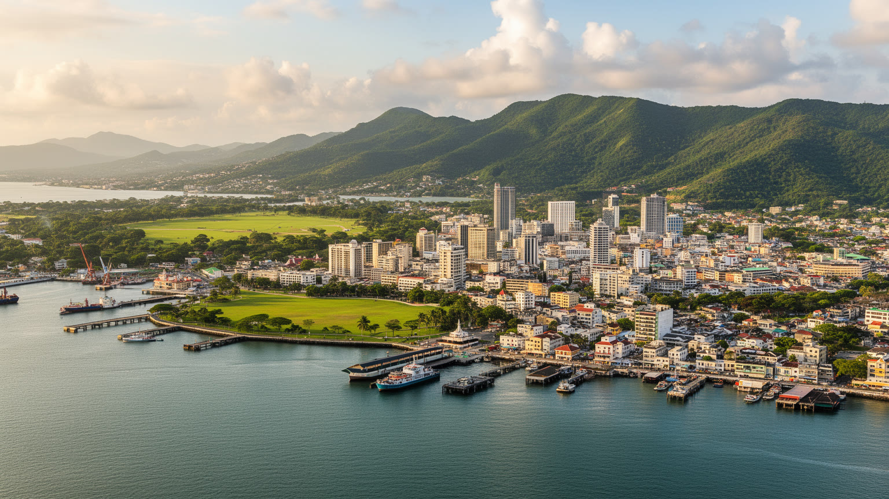
🇹🇹 トリニダード・トバゴ / トリニダード島 / World City Atlas
パリア湾に面するトリニダード・トバゴの首都です。港、官庁街、金融、サバナ、カーニバル、石油ガス経済、丘陵住宅地、洪水、治安、移民文化が近距離で重なる都市です。
都市の骨格
ポートオブスペインは、市域だけを見ると小さいです。ですが東西回廊の通勤圏、港湾、官庁、金融、文化施設を束ね、島全体の政治と仕事を引き寄せます。
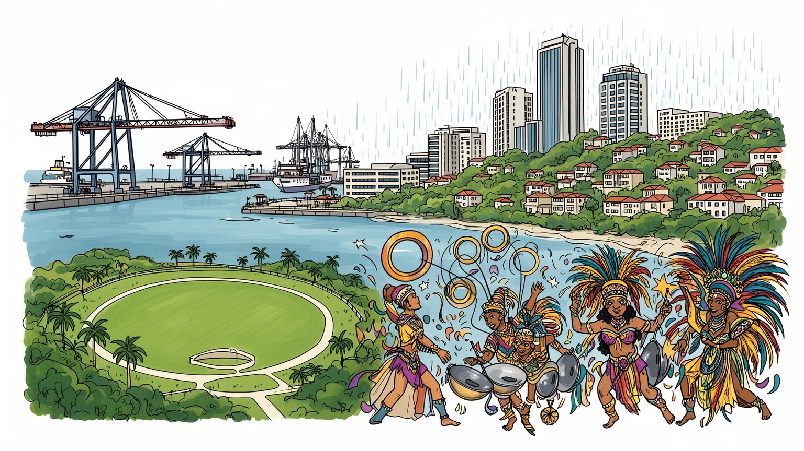
ポートオブスペインは南米大陸に近いカリブ海の首都で、ベネズエラ、島嶼国家、英語圏カリブ、エネルギー市場を結びます。港、外交、移民、海上保安、災害対応が集中し、小国の交渉力を支える中枢です。海域の管理も要点です。
石油ガス収入を背景に、行政、金融、港湾、建設、商業、文化イベントが雇用を作ります。通勤者、露店、警備、清掃、音楽家、港湾労働者が日々集まり、都心の小さな市域を広い経済圏へ変えている街です。収入差も映ります。
アフリカ系、インド系、混血、欧州系、中国系、中東系、ベネズエラ系の記憶が重なります。教会、ヒンドゥー寺院、モスク、オリシャ信仰、カリプソ、スティールパン、カーニバルが都市の暦を作る街です。食も語ります。
旅行者はサバナ、カーニバル、博物館、湾岸を訪ねるが、住民は渋滞、洪水、治安、住宅費、公共交通、仕事の不安と向き合います。観光の祝祭性と日常の負担が同じ街路に現れる首都です。暮らしも読む場所です。今も続きます。
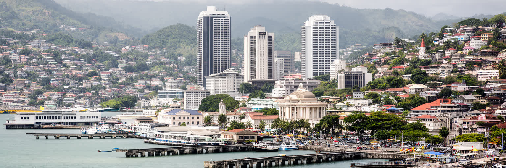
ポートオブスペインの都市としての力は、パリア湾に面した港と、国会、官庁、裁判所、中央銀行、企業本社が近距離に集まる首都機能から生まれます。市域人口は大きくないが、朝には東西回廊や郊外から多くの通勤者が入り、昼間の都心は人口統計以上の密度を持ちます。湾岸は単なる眺望ではなく、輸入品、燃料、建材、食料、クルーズ客、行政の書類、金融取引が交差する作業場です。港が動けば小売店や市場、倉庫、運送、警備、清掃、飲食が連動し、官庁街の意思決定は島全体の雇用とインフラに影響します。首都の中心には独立広場やレッドハウスのような政治の象徴があり、その背後に丘陵住宅地と低所得地区、南側に埋立地と港湾が広がります。海と丘に挟まれた地形は都市の美しさを作る一方、道路容量、排水、洪水、土地利用の制約も強めます。さらに港湾の安全、税関、海上保安、災害時の物資搬入は、平時には目立たないが国家の持続性を左右します。中心部の数本の道路が止まれば、官庁、学校、病院、港、商店の動きが同時に乱れます。そこに大使館や報道機関、裁判所が加わるため、都心の街路は行政手続きと政治的な緊張も受け止めます。沿岸の低地管理も重要です。港町の記憶も残ります。ポートオブスペインを見る時は、港の実務、国家の儀礼、日々の通勤が同じ狭い範囲で重なっていることを読む必要があります。
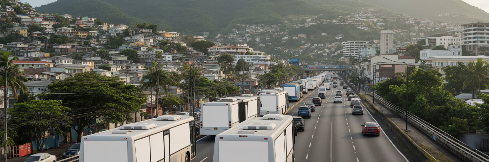
ポートオブスペインは行政上の市域だけでは理解できません。北の山地と南の湿地に挟まれた都市化は、東へサンフアン、セントジョセフ、チュナプナ、アリマへ伸びる東西回廊として連続し、多くの住民は市外に暮らしながら首都へ働きに来ります。高速道路、幹線道路、ミニバス、乗合タクシー、フェリー、徒歩が通勤を支えますが、朝夕の渋滞は家族の時間、学校、商売、医療への移動を削ります。市域人口が小さいのに都心が大都市のように感じられるのは、昼間の流入と広域の消費が集中するためです。郊外の住宅地は比較的安い住まいを提供する一方、移動費と時間の負担を増やします。交通政策は道路拡幅だけで解けず、住宅の配置、雇用の分散、バスの信頼性、歩道の安全、洪水時の迂回路まで含めて考える必要があります。道路沿いの商業施設や学校は通勤動線に依存し、事故や豪雨が起きると遅刻だけでなく日銭収入にも影響します。公共交通が読みやすくなれば、車を持たない若者、高齢者、移民労働者の都市利用も広がります。駅や停留所の少ない移動は、目的地を知る人には柔軟でも、初めて来た人や障害のある人には使いにくいです。首都の便利さは、毎日長い距離を移動する人々の忍耐に支えられています。東西回廊を都市の一部として読むと、ポートオブスペインの実際の大きさは地図上の境界よりはるかに広いことが見えてきます。
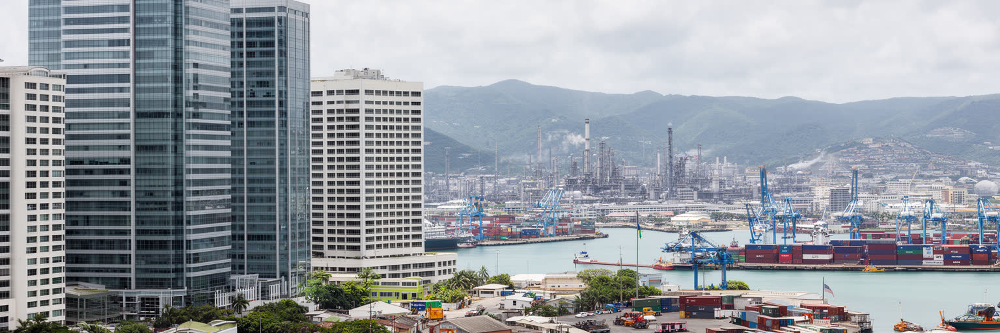
トリニダード・トバゴの経済は、石油、天然ガス、液化天然ガス、石油化学、アンモニア、メタノールなどのエネルギー産業と深く結びつきます。ポートオブスペインの中心部には中央銀行、商業銀行、保険、法律、会計、政府機関、企業本社が集まり、南部の工業地帯や沖合資源から生まれる収入を制度と取引へ変換します。つまり首都の経済は、都心だけで完結するサービス業ではなく、島の別の場所で掘られ、精製され、輸出される資源に依存しています。エネルギー価格が上がれば財政と雇用に余裕が生まれ、下がれば公共投資、通貨、生活費、若者の就職に影響が出ります。金融街のビル、港湾の倉庫、官庁の予算編成、家庭の電気料金は一つの回路でつながっています。資源収入は教育、医療、道路、文化行事を支える一方、経済の多角化を遅らせる危険もあります。オフィスで働く専門職だけでなく、清掃、警備、配達、飲食、建設、港湾の現場労働もこの循環に組み込まれます。価格変動の影響は国家予算の表だけでなく、家賃、通学費、露店の仕入れ、文化イベントの開催規模にも表れます。若者にとっては、資源部門以外の技能、情報産業、創造産業、地域サービスへ道を作れるかが将来の選択肢を左右します。ポートオブスペインを読むには、華やかな都心業務と、エネルギーに偏った国家経済の脆さを同時に見ることが欠かせません。
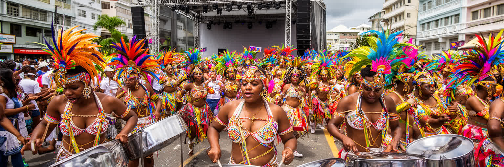
ポートオブスペインの文化を最も強く世界へ知らせるのはカーニバルです。サバナ周辺の舞台、街路のバンド、マス、カリプソ、ソカ、スティールパン、衣装制作、音響、屋台、警備、清掃、交通規制が、数週間にわたって都市の時間を変えます。祝祭は観光向けのイベントである前に、奴隷制、解放、植民地支配、階層、抵抗、風刺、創造性の記憶を受け継ぐ公共文化です。カリプソは政治を笑い、スティールパンは貧しい地区の素材から新しい音を作り、衣装と踊りは身体を通して社会を語ります。ですが大規模化したカーニバルは、スポンサー、チケット、観光収入、警備費、商業化の問題も抱えます。住民にとっては誇りであると同時に、騒音、混雑、費用、公共空間の使い方をめぐる調整でもあります。文化を守るとは、派手な本番だけでなく、練習場、工房、地域のパンヤード、若者の参加、作り手の収入を支えることでもあります。衣装を縫う人、楽器を直す人、深夜に練習を見守る家族、道を清掃する人も祝祭の担い手です。観光客が見る一日の熱狂の背後には、何か月もの準備と地域の誇りが積み重なります。学校や地域団体が音楽を教えることは、文化継承であると同時に、若者に役割と居場所を与える社会政策にもなります。記憶も鳴ります。ポートオブスペインの祝祭は、都市の歴史が音と身体で毎年更新される制度なのです。
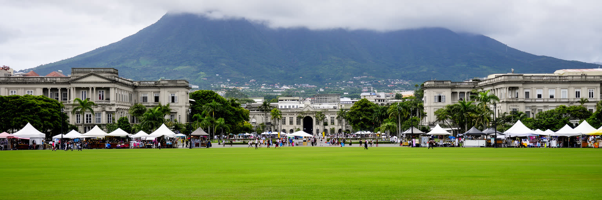
クイーンズパークサバナは、ポートオブスペインを読むための大きな広場です。広い芝地の周りには歴史的な建築、植物園、動物園、劇場、学校、大使館、住宅地、屋台が並び、朝の運動、家族の散歩、屋台の食事、カーニバルの舞台が同じ場所で展開します。都市の中心にこれほど大きな空地があることは、熱帯の首都に風と余白を与えます。ですが公共空間は自然に公平な場所になるわけではありません。治安、照明、歩道、トイレ、交通、イベント占用、露店の許可、維持費が、誰にとって使いやすいかを決めます。周辺の高級住宅や外交施設と、都心の労働者や若者が同じ縁を歩くため、サバナは階層差を見せる場所でもあります。公園の屋台で食べる一皿、夕方の運動、祭りの仮設舞台、学校の行事は、首都の硬い制度を日常へ開きます。雨季には水の逃げ場、暑い日には風の通り道としても機能し、都市環境の緩衝帯になります。大きな緑が残ることで、中心部は経済だけに占領されず、住民が都市を自分のものとして使う余地を保ちます。周縁の歩道や横断の安全が改善されれば、サバナは眺める緑ではなく、子どもや高齢者も使える公共財になります。ポートオブスペインの公共性は、官庁の建物だけでなく、人が無料で集まり、歩き、休み、祝える空間が残るかにかかっています。サバナは都市の余白であり、都市を互いに見えるものにする舞台です。
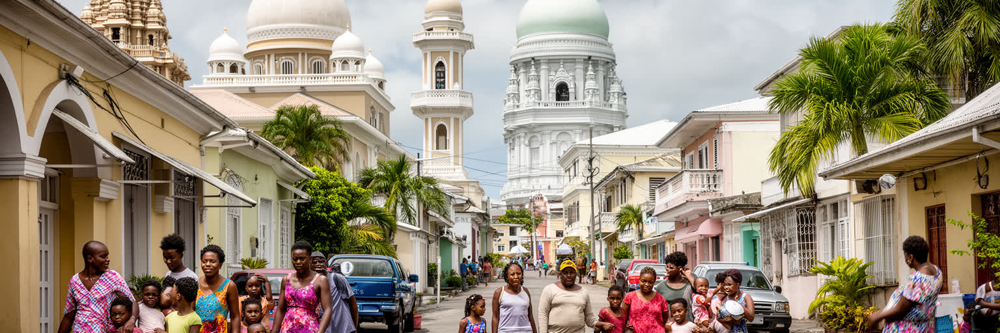
ポートオブスペインの社会は、アフリカ系、インド系、混血、欧州系、中国系、中東系、近年のベネズエラ系移民を含む多層の歴史から成ります。街には教会、ヒンドゥー寺院、モスク、オリシャの信仰、スピリチュアル・バプティストの伝統が存在し、クリスマス、イード、ディワリ、ホセイ、カーニバルのような行事が都市の暦を厚くします。宗教は建物だけでなく、葬儀、結婚、食、服装、学校、慈善、近所の助け合いに現れます。植民地期の奴隷制とインド人契約労働、戦後の移民、周辺国からの移動は、音楽や料理、言語、家族名に残っています。多文化性は観光用の明るい言葉になりやすいが、実際には差別、階層、警察との関係、移民の在留、仕事、住宅をめぐる緊張も伴います。都市が多様であるとは、違いを飾ることではなく、宗教上の休日、学校の配慮、食の規範、言語支援、地域の安全を調整し続けることです。葬送や祝い事では親族、教会、寺院、近所が互いに支え、移住者は同じ言葉や信仰を頼りに都市へ入ります。子どもが複数の祝日と料理を知ることも、首都の社会を作る教育になります。市場や屋台の食、音楽のリズム、服装の色彩にも、この多層の記憶は日常的に現れます。世代間の語りも大切です。家族史も続きます。ポートオブスペインの文化的な力は、この複雑さを音楽、祝祭、日常の食卓へ変えてきた点にあります。
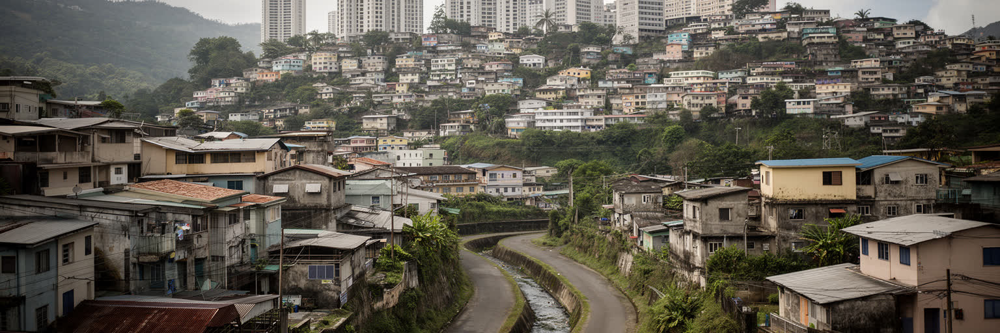
ポートオブスペインの住宅地は、湾岸の業務地区、サバナ周辺の緑地、丘陵の高級住宅、古い木造住宅、低所得地区、郊外の通勤住宅が複雑に入り組みます。小さな市域の中に行政と金融が集まるため、職場に近い土地は限られ、家賃や地価は生活の選択を強く制約します。丘の上の眺めの良い住宅と、洪水や斜面災害、治安不安を抱える地区は近接していますが、道路、排水、学校、医療、公共交通へのアクセスは同じではありません。貧困は単に所得の低さではなく、夜に安全に帰れるか、雨で道路が水没しないか、子どもが学校へ通えるか、仕事へ遅れず行けるかとして現れます。再開発や都市美化は老朽建物を更新する一方、小さな商売や長く住んだ住民を押し出すことがあります。住宅政策を考えるには、建物だけでなく、土地権、賃貸、公共住宅、家族の支援、移民の居住、治安、交通をまとめて見る必要があります。古い家の修理費や保険、家族内の相続、借家人の権利も、住み続けられるかを左右します。中心部に近いほど機会は多いが、騒音、混雑、治安不安、洪水にも近くなります。家を失った人や非公式な住まいにいる人への支援も、都市の表面からは見えにくい重要な課題です。首都の華やかさは、近くに暮らす人々の不安定さを隠すことがあります。ポートオブスペインの都市課題は、誰が中心部の近さを使えるのかという問いに集約されます。
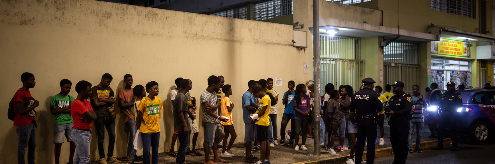
ポートオブスペインを語る時、治安の問題を避けることはできません。犯罪への不安は住民の移動、店の営業時間、観光客の行動、夜の文化、公共交通、子どもの遊び場に影響します。ですが治安を警察の数だけで見ると、都市の背景を見落とします。失業、学校からの離脱、薬物取引、銃器、地域間の対立、住宅の不安定さ、家庭の負担、若者が使える安全な場所の不足が、街路の不安と結びつきます。都心の警備が強まっても、低所得地区の教育、スポーツ、音楽、職業訓練、心のケア、家族支援が弱ければ、問題は別の場所へ移るだけです。カーニバルやスティールパンの地域活動は、単なる娯楽ではなく、若者が技術と役割を得る機会にもなります。観光客にとっての安全案内と、住民が毎日感じる安全は同じではありません。夜間交通、街灯、空き地の管理、学校後の居場所、被害者支援、移民への相談窓口も安全の一部です。地域の大人が若者を知り、店が通りに目を向け、行政が小さな危険を放置しないことが信頼を作ります。女性や子どもが安心して移動できるかも、都市の安全を測る具体的な指標になります。ポートオブスペインの社会課題を読むには、犯罪統計だけでなく、仕事の入口、学校の持続、公共空間の明るさ、地域団体の力、移民の支援、警察への信頼を重ねて見る必要があります。安全な都市は、監視される都市ではなく、人が帰る場所と将来を持てる都市です。
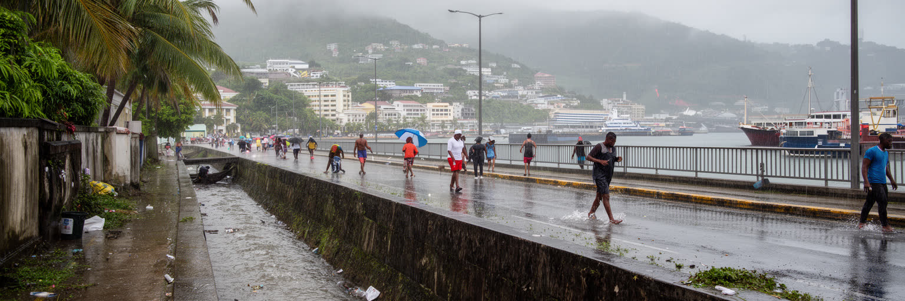
ポートオブスペインは熱帯の雨季、短時間の強雨、山地から流れる水、埋立地、古い排水路、海面上昇の影響を受けます。都市が北の丘陵から湾岸へ傾くため、上流の開発、斜面の土砂、詰まった側溝、低地の道路は豪雨時に一体となって問題を起こします。洪水は交通を止めるだけでなく、店舗の商品、学校、病院への移動、屋台の収入、住宅の衛生、車を持たない人の通勤に直撃します。気候変動で雨の強さや暑さが増せば、排水設備、日陰、緑地、建物の断熱、避難情報の重要性はさらに高まります。湾岸の都市美化や再開発が進んでも、水の通り道を無視すれば被害は繰り返されます。都市の防災は大型工事だけでなく、日常のごみ管理、斜面の監視、側溝清掃、土地利用規制、公共交通の代替、地域への早い情報共有に支えられます。低所得地区では浸水後の清掃や修理費が家計を圧迫し、商店は営業停止で収入を失います。暑さは屋外労働者、高齢者、冷房を使いにくい世帯へ強く出ります。学校や職場が熱中症と豪雨の両方に備えることも、これからの都市運営には欠かせません。日陰づくりも必要です。サバナのような緑地は余暇の場所であると同時に、都市の熱と水を受け止める空間でもあります。ポートオブスペインの気候リスクは、海の近さと山の近さがもたらす美しさの裏側にあります。雨季の街路を見ることは、都市の管理能力を読むことでもあります。
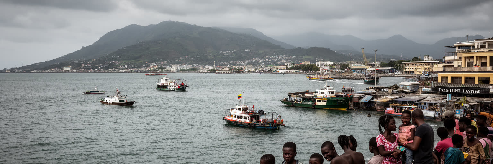
ポートオブスペインは、カリブ海の島の首都でありながら、南米大陸に非常に近い都市です。パリア湾の向こうにはベネズエラがあり、漁業、海上交通、移民、治安、エネルギー、外交はこの近さと切り離せません。政治・経済危機を背景にベネズエラから来る人々は、労働、医療、教育、言語、在留資格、差別の問題を都市へ持ち込み、同時に店、家族、宗教、食文化の新しいつながりも作ります。海域は資源の場所であり、国境管理の場所であり、漁師の生活の場所でもあります。英語圏カリブの国として地域機構と結びつきながら、スペイン語圏の大陸にも向き合う点に、トリニダード・トバゴの地政学があります。港と外交機関が集まるポートオブスペインは、その交渉の前線になります。難民や移民を単なる負担として見るのではなく、保護、労働権、地域の安全、学校の受け入れをどう整えるかが都市の成熟を問います。漁業資源や海底エネルギーをめぐる判断も、環境保護と国家収入の間で難しい均衡を求められます。海を渡る小さな船の動きは、家族の再会であり、商売であり、時に危険な移動でもあります。沿岸の監視と救助体制も重要になります。海は観光の青い背景だけでなく、近い国境と広い責任を運ぶ通路です。ポートオブスペインの国際性は、遠い世界都市との接続だけでなく、すぐ隣の大陸と日々向き合う現実から生まれています。
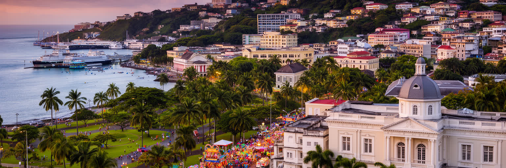
ポートオブスペインは、人口規模だけで測れば小さな首都です。しかし、港、官庁、金融、エネルギー収入、カーニバル、サバナ、宗教多様性、東西回廊の通勤、洪水、治安、ベネズエラとの近さを重ねると、カリブ海の政治経済が圧縮された都市として見えてきます。高層ビルや巨大な地下鉄網を持たなくても、国家予算、資源価格、移民、文化産業、公共空間、地域格差がここで交差します。祝祭の音が都市を世界へ開く一方、雨季の水、渋滞、住宅不安、若者の仕事、犯罪への不安は、住民の日常を重くします。首都を読むとは、明るいカーニバルと暗い社会課題を別々に分けることではなく、同じ街路でどう共存しているかを見ることです。湾岸の港は世界市場へつながり、サバナは住民の余白になり、丘陵住宅は格差を映し、宗教と音楽は複数の祖先を現在へ運びます。観光で訪れる短い時間と、住民が毎日使う長い時間を重ねると、都市の評価は祝祭の華やかさだけでは決まらないです。行政、文化、交通、防災、仕事、移民受け入れが互いに支え合って初めて、首都は信頼されます。ここでは小さな市域が大きな責任を背負います。今も続きます。ポートオブスペインの価値は、巨大さではなく、カリブ海の複雑な歴史と現代の不安を、歩ける距離の中で読ませる力にあります。小さな首都の地図には、島国が世界と交渉する方法が詰まっています。